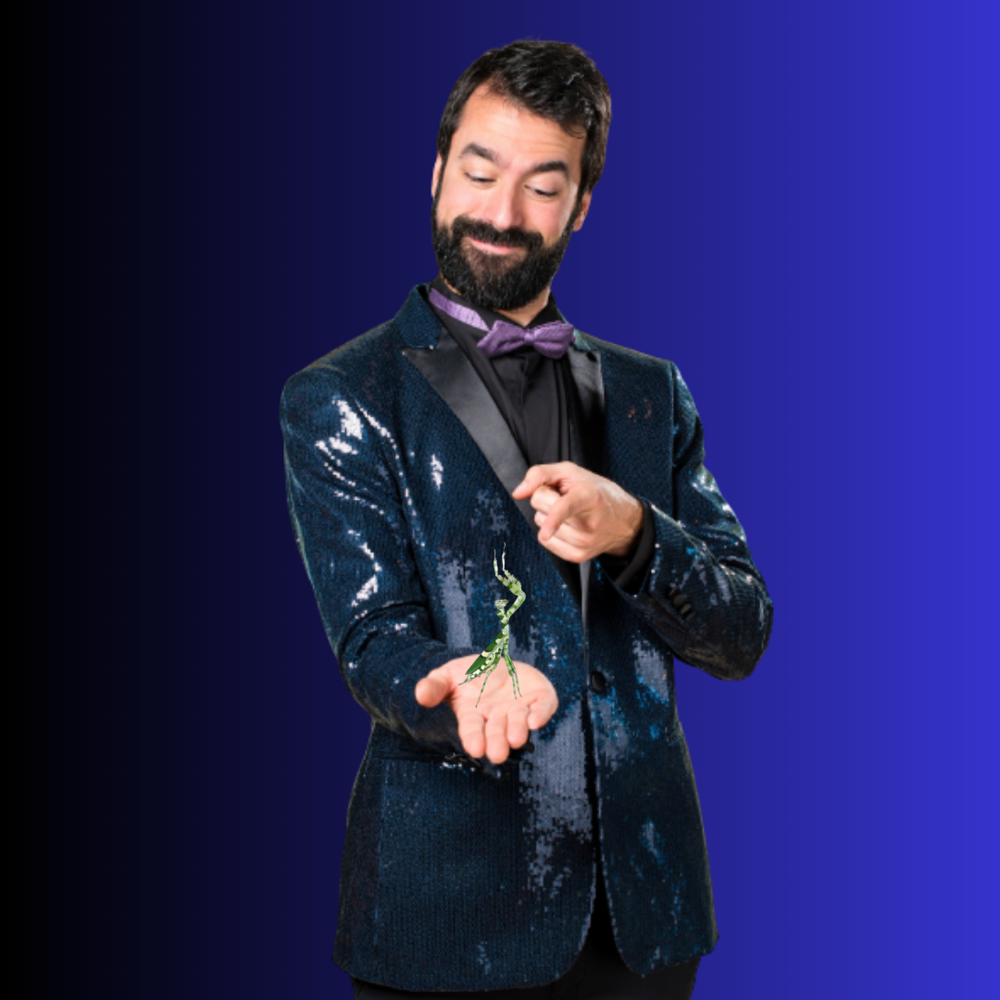
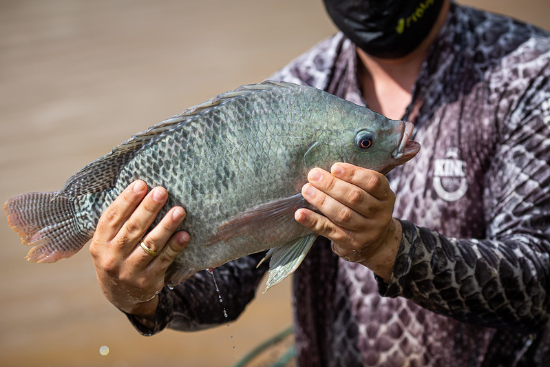

Sobre o Autor
Última postagem
Enxerga, Jatobá!
As recentes preocupações com o aumento do QI entre as populações de tilápias do Paranoá trazem à tona a necessidade de regulação das postagens nas redes sociais. Sob a condição de anonimato, uma das entrevistadas afirmou existir um verdadeiro "gabinete do sódio" voltado para desinformar pescadores e banhistas continue lendo...
Postagens anteriores
EA Games tem novidades
Jimmy Deer, novo CEO da gigante do entretenimento revela planos para lançamento de console conectador a implantes da Neuralink. "Chances de dar errado são inferiores a zero" Continue lendo...
Drone sofre interferência e passa a tocar Bruno e Marrone
Ele não é vagabundo, não é delinquente. É um cara carente...Continue lendo...
Você está preparado para o Goat Simulator RV?
A experiência de vida animal será levada a novos patamares com a chegada de Goat Simulator: Mating Season.Continue lendo...